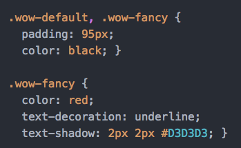

Sass is a CSS preprocessor that simplifies writing CSS. It adds a lot of features of programming languages to CSS, from functions to loops and much more. Sass makes more sense when writing CSS from a human point of view, and makes it so that you stay DRY (Don't Repeat Yourself).
Sass was created in 2006 by Hampton Caitlin and Natalie Weizenbaum, and Sass files originally ended in .sass. However, in the newest version of Sass, files end in .scss. .sass files use indentation rather than brackets to indicate the nesting of selectors, use newlines rather than semicolons to separate properties, and the syntax is more similar to that of Ruby, while .scss files are more like CSS.
Nesting helps us to stay DRY. Rather than having to repreat ourselves in declaring "nav" every time we want write CSS for a certain nav element, we can just nest the tags for these elements in the greater nav tag, indicating that these features all apply to different elements in the nav.
This translates to the CSS file below.
Like most other programming languages, Sass allows you to create and define functions, making writing CSS a lot more efficient. In Sass, functions are declared using "@function", variables are denoted with a "$" followed by the name, and the return statement is denoted with "@return".
As shown in the above example, creating functions in Sass can prove to be very useful. And when your Sass is converted into CSS, your code is ultimately much cleaner, efficient, and user-friendly.
Like functions, loops are another feature of Sass that isn't present in CSS, making Sass much more useful. To create a loop, you use "@for" and assign an iteration variable, again using "$" followed by the name. To call the value of the iteration variable, you use "#{$varname}". NOTE: In Sass, the range of iteration is INCLUSIVE on both bounds, as shown in the example below.


In the above example, the loops goes from 1 to 3, inclusive of both numbers. It declares that the HTML elements with ids "box-1", "box-2", and "box-3" each have widths incremented by 25 pixels. The converted CSS code turns out to become what is expected from the loop in the Sass file, saving us time from copy-and-pasting and making coding much faster!
Partial files are a great way to to separate blocks of code that you may want to use in multiple files.
For example, if you wanted to continue the same basic style between multiple webpages, you can import the partial file of that basic style into each page's individual SCSS file rather than rewriting the CSS for it each time.
Creating partial files also simply makes your code more easy to read and maintain. All partials files are named with a leading underscore (ex: _partial.scss).
In the example below, _partial.scss is our partial file containing some basic CSS.
Then in the SCSS file we write:
So when we compile the SCSS, the output CSS file will include the code block contained in the partial file.
Mixins are used to make repetitive CSS declarations (within the same file) more DRY. You can also pass parameters into you mixins to make them more flexible. Use @include to use your mixin anywhere in your code.
Below is a mixin in input.scss using a parameter:
And when compiled, you get the following output.css file.
Extends are similar to mixins in that they both help to reduce repetitive code blocks. Extends allow you to share certain CSS properties between selectors.
In the example below, we have two extends, %equal-heights and %wow. Below %wow are two selectors which extend %wow. The @extend tells the compiler that you want to insert the block of CSS included in your extend (%wow) in that given selector (%wow-default or %wow-fancy). After you have extended, you can continue to add more CSS in that selector.
When the compiled, the CSS file looks like this:
The first code block shows that the extended CSS now applies to both selectors, while the second code block shows us the additional CSS written only for that seclector.
You'll also notice that none of the %equal-heights extend is included in the final CSS file. This is because the @extend was never used anywhere to extend it, and since it was never used anywhere it isn't printed.
A few of these features may have looked very similar, so you may be wondering in which cases you should use a certain feature rather than another.
Use mixins to include and functions to return.
You CAN always use mixins, but that doesn't always mean you should. It's better to use mixins only when you need to take arguments (extend doesn't take arguments).
You can find our entire code demo here and our presentation here.
We hope you found this helpful!